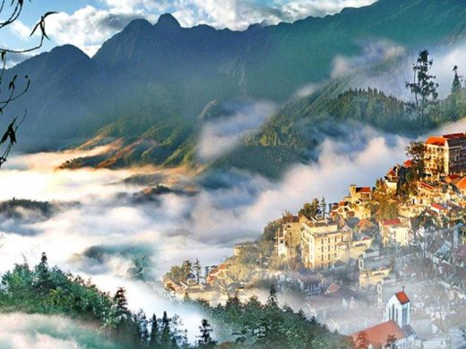

ベトナム旅行ならSapaへ
July 03, 2020 サパはベトナムの首都ハノイより約250km、標高1,600mの山間部にある高原リゾートです。
ベトナムには54の民族があり、その中でもサパ周辺には数多くの少数民族が生活しております。サパ観光中には、 数多くの少数民族に出会うことが出来、少数民族特有の華やかな衣装に目を奪われる事でしょう。
サパの目玉の一つとして、各国の写真家も多く訪れて撮影をする棚田を見逃すことは出来ません。4月から田植えが始まり、 稲が生長し緑が生える夏場、黄金色に稲穂が輝く9月とどの時期に訪れても素晴らしい景観を見れることができます。
そんなサパに訪れるともう一度訪れたいと思ってしまうほどの魅力を秘めております。
段々畑

サパの段々畑は、自然と人間の手が調和した組み合わせで、サパの田んぼの素晴らしい景色を作り上げました。段々畑はサパの最も興味 深い風景の一つです。鮮やかな自然の美しさをもたらし、山腹に沿った高低の野原に自然の鮮やかな絵を作り上げたからです
愛の滝
滝から流れる清い水には金の渓流という名前がつけられています。とても静かできれいなところです。観光客は滝の美しさや自然の ままの美しさ、珍しい植生を感じることだけでなく、ロマンチックなラブストーリーも耳にします。その上、温泉を入ったり、 写真を撮ったり、小川を流れたりすることができます。また興味深い原始林も探検できます